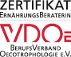

Astrid Baumeister
Dipl. Oecotrophologin, Heilpraktikerin, Naturheilkunde, Ernährungstherapie
Meine Therapieschwerpunkte liegen vor allem im internistischen Bereich. Dabei befasse ich mich sowohl mit akuten als auch chronischen Erkrankungen.
Ich arbeite hauptsächlich mit Arzneien aus der Spagyrik, der ganzheitlichen Pflanzenheilkunde und der Anthroposophie sowie mit Fussreflexzonen-Massage. Der Begriff Spagyrik leitet sich aus dem Griechischen („Spao“= trennen, lösen, scheiden; „Ageiro“ = binden, vereinen) ab. Seit Paracelsus wird der Begriff für die alchemistische Herstellung von Heilmitteln verwendet. Es handelt sich um spezifische Aufbereitungsmethoden von Heilpflanzen, Mineralien dun Metallen, mit dem Ziel ganzheitlich wirksamen Arzneien zu erhalten.
Die ganzheitliche Ernährungstherapie ist ein weiterer wichtiger Bestandteil bei der Therapie vieler Erkrankungen.
Berufsrechtliche Angaben
Heilpraktikerin
Die Erlaubnis zur Ausübung der Heilkunde ohne Bestallung mit der Berufsbezeichnung „Heilpraktikerin“ wurde am 22. Mai 2006 durch das Referat für Gesundheit und Umwelt der Landeshauptstadt München erteilt.
Zuständige Aufsichtsbehörde ist das Referat für Gesundheit und Umwelt der Landeshauptstadt München, Bayerstraße 28a, 80335 München.
Berufsrechtliche Regelungen
- Gesetz über die berufsmäßige Ausübung der Heilkunde ohne Bestallung (Heilpraktikergesetz)
- Durchführungsverordnung zum Heilpraktikergesetz
- Berufsordnung für Heilpraktiker
Mitgliedschaft im Berufsverband BDHN Bund Deutscher Heilpraktiker und Naturheilkundiger e.V., Weiglstraße 9, 80636 München
Diplom Oecotrophologin
Zertifikat Ernährungsberaterin VDOE
Mitgliedschaft im Berufsverband VDOE BerufsVerband Oecotrophologie e.V. (VDOE), Reuterstr. 161, 53113 Bonn
Es gilt die Berufsordnung des VDOE.

Gründungsmitglied des
„Qualitätszirkel Ernährungsprofis München und Umland“
| Ernährungsberaterin VDOE e.V. |  |
| Mitglied des BDHN e.V. |
Tel. 089 / 14 86 97 13
Termine nach Vereinbarung